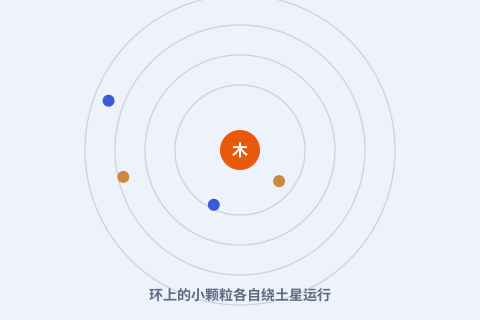

一、一个力学难题
土星外圈那圈漂亮的光环，到底是实心的一块，还是无数碎块？19 世纪的天文学家为此争论不休。

二、稳定轨道的分布
麦克斯韦分析：若是一整块刚性环，引力与离心力很难处处平衡，极易崩塌；只有分成许多独立小颗粒，各自按轨道运行才稳定。
三、数学的胜利
他写下长长的力学计算，证明实心环在动力学上站不住脚。后来的观测（尤其旅行者号）证实了：环确实由冰与岩的碎粒组成。
四、更大的意义
这道题展示了麦克斯韦的本事：把现实难题翻译成方程，让数学替你下结论。这种“以算代猜”的风格，贯穿了他的全部工作。